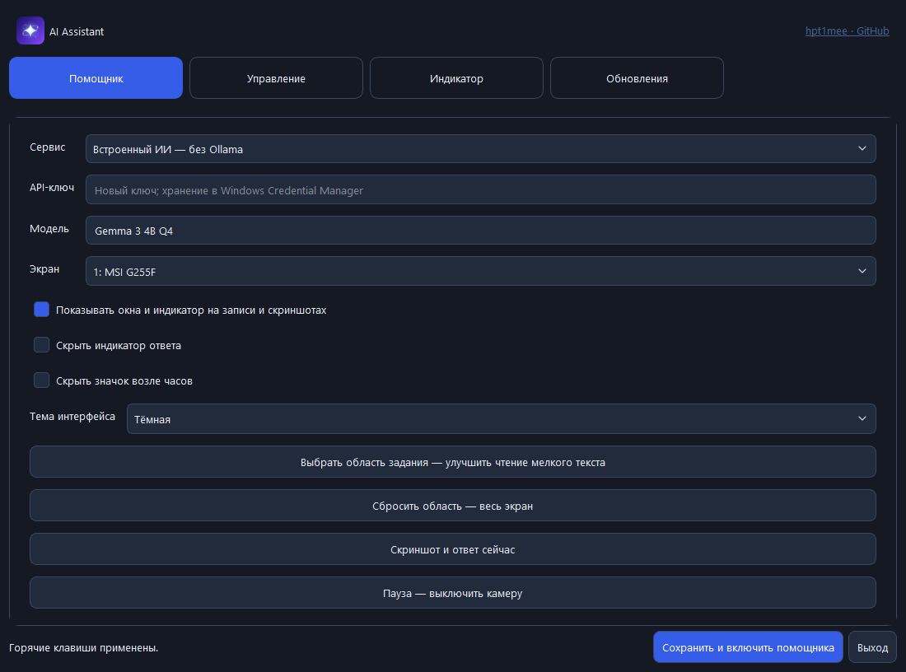
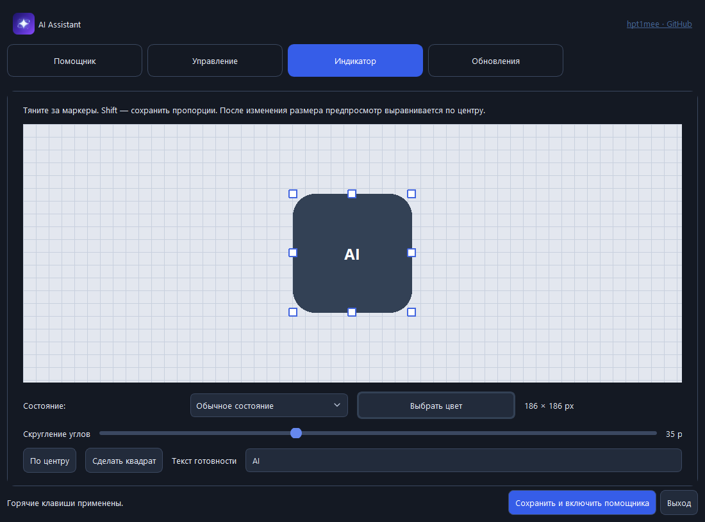

Одна комбинация — один запрос
Выдели область экрана и отправь её модели. Горячие клавиши можно настроить под свои привычки.
Ctrl + Alt + Sпо умолчанию
От скриншота к ответу — одной комбинацией клавиш. Выбирай модель, настраивай индикатор и работай в своём ритме.
Python в комплекте · Локальный режим · Автообновления

Objectivity живёт на рабочем столе и помогает разбирать то, что уже открыто на экране.
Выдели область экрана и отправь её модели. Горячие клавиши можно настроить под свои привычки.
Используй встроенную модель без интернета после её загрузки. Или подключи OpenRouter, OpenAI и Ollama.
Меняй размер, цвет, скругление и текст готовности. Редактор сразу показывает, как будет выглядеть результат.
Тёмная и светлая темы. Никаких случайных чисел для размера: растягивай индикатор мышью, а с Shift сохраняй пропорции.

Помощник проверяет новые версии, скачивает их и устанавливает после завершения текущего запроса. Затем запускается снова с твоими настройками и моделью.
История релизовНовая версия найденаПроверка при запуске и каждые 5 минут
✓Загрузка и проверкаПроверка контрольной суммы файла
✓Установка и перезапускПосле завершения текущей операции
✓Создай аккаунт, скачай установщик и войди в приложении. Затем выбери модель и задай первый вопрос по скриншоту.
Скачать ObjectivityWindows · Установщик с Python · Ярлык на рабочем столе
Установщик создаст папку приложения и ярлык. Python отдельно устанавливать не нужно.
Для встроенной модели загрузи файлы один раз. Для онлайн-сервисов добавь свой API-ключ.
Выбери тему, сочетания клавиш и оформление индикатора. Всё можно изменить позже.
Это приложение для Windows. Ты можешь использовать локальную модель или подключить онлайн-провайдера. Сайт знакомит с приложением и ведёт к скачиванию.
Да, во встроенном режиме после первого входа и загрузки модели. Проверка обновлений и онлайн-провайдеры требуют интернет. Скорость локальной модели зависит от твоего компьютера.
Локальная модель не требует API-оплаты. Для онлайн-моделей действуют тарифы и ограничения выбранного провайдера; наличие бесплатных моделей не гарантирует постоянной доступности.
Во встроенном режиме изображение обрабатывается на твоём компьютере. В онлайн-режиме выбранный скриншот отправляется подключённому провайдеру. Перед отправкой проверь выбранную область экрана.
Нет. Модель может ошибиться или неправильно прочитать изображение. Проверяй важные ответы по исходным данным и используй помощника как дополнительный инструмент.